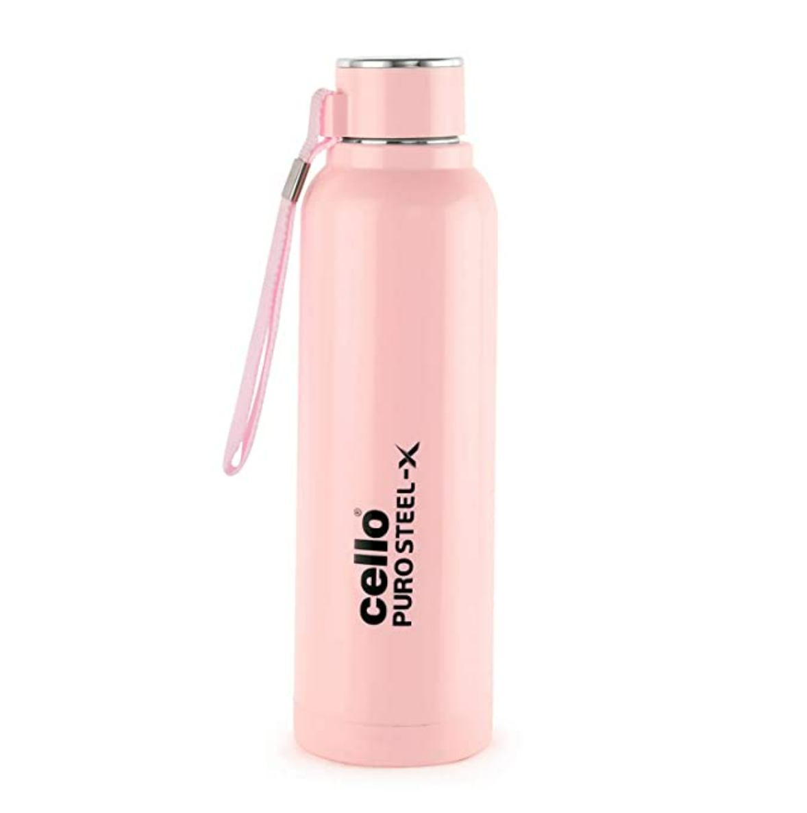
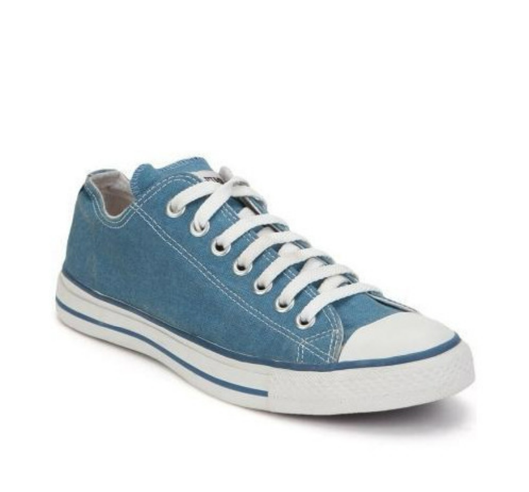

Case study between google lens and mobilenet !
VS
MOBILENET

Output on Google Lens- Cello pink bottle of steel
Output on Mobilenet- Water bottle
Result-
Google Lens is more aproprate

Output on Google Lens- Canvas shoe
Output on Mobilenet- Running shoe
Result-
Google Lens is more aproprate
Output on Google Lens- King-size bed
Output on Mobilenet- Studio couch, day bed
Result-
Google Lens is more aproprate
Output on Google Lens- on-ear headphone
Output on Mobilenet- loudspeaker, speaker, speaker unit, loudspeaker system, speaker system
Result-
Google Lens is more aproprate
Output on Google Lens-
Output on Mobilenet- Studio couch, day bed
Result-
draw
I have tested 5 images GOOGLE LENS have predicted 4 of them more accurately.
And MOBILENET was less accurately So according to my case study GOOGLE LENS is more Accurate.